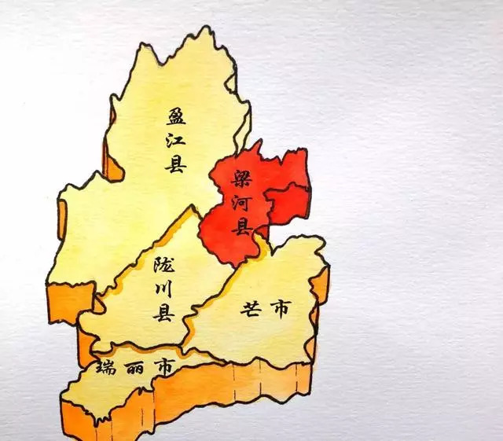
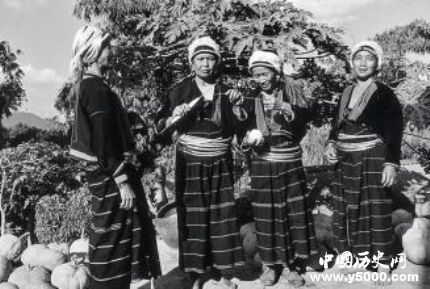
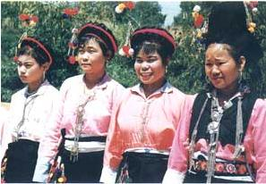

Welcome to I56
阿昌族起源
阿昌族源于古代的氐羌族群，而与南诏、大理国时期的“寻传蛮”有直接的渊源。唐代文献中称为“寻传蛮”的，即是阿昌族和景颇族的前身。今日所用族称“阿昌”，则最早见于元代文献《招捕总录》、《元史·地理志》等。
 阿昌族在发展形成过程中，曾与诸多民族融合。宋元时期，内地商人已进入云龙一带阿昌人中。明代在云南实行军民屯田，汉族人口大量移入，一部分阿昌人融入到汉族及其他民族中，也有部分汉族融入到阿昌人中，如明军屯守军的后代多在当地转化为阿昌族及其他民族。明清以来阿昌族长期与汉、白、傣等民族交往密切，也多有融合。
阿昌族在发展形成过程中，曾与诸多民族融合。宋元时期，内地商人已进入云龙一带阿昌人中。明代在云南实行军民屯田，汉族人口大量移入，一部分阿昌人融入到汉族及其他民族中，也有部分汉族融入到阿昌人中，如明军屯守军的后代多在当地转化为阿昌族及其他民族。明清以来阿昌族长期与汉、白、傣等民族交往密切，也多有融合。
阿昌族民间对自身来源有不同的看法。以陇川县户撒乡为例，当地就有“东来说”、“南来说”、“内地来说”等不同的说法。而且部分群众家还保留着证明他们来自内地的家谱。根据部分学者的意见，“北来说”和“东来说”是比较可靠的说法，并说明他们与景颇族在历史上有渊源关系。 这些情况说明，阿昌族虽然人口不多，但他的来源也较复杂，也是一个多元一体的民族。
阿昌族主要居住地
阿昌族的先民很早就居住在滇西北的金沙江、澜沧江和怒江流域一带，后来一部分迁至怒江西岸，即古代称作“寻传”的地区，再逐渐南移，约于13世纪定居于现在的陇川县户撒坝子，另一部分则沿云龙、保山、腾冲迁徙，最后定居于梁河地区。

从历史传说中得知，阿昌族最初以采集、狩猎为生。后来逐渐种植芋类，开始了初期的农业生产。传说当时的婚姻关系是一群男子与一群女子互为夫妇，妇女在家庭和社会中居于领导地位，这是母系社会的反映。关于早期阿昌族社会的群婚和母权制残余，在现行的亲属称谓和新中国成立前的婚姻习俗中，也保留了某些遗迹，如伯母、姑母、舅母、姨母同称为“巴”；伯父、姑父、舅父、姨父同称为“龙怕”；胞兄、堂兄、姑表兄、舅表兄、姨表兄同称为“喳唉”（兄）；胞姊、堂姊、姑表姊、舅表姊、姨表姊同称为“衣”（姊）；儿子、侄子、外甥、表侄、表甥同称为“早”（儿子）；女儿、表侄女、表甥女同称为“鸟早”（女儿）等等，可见婚姻集团是按照辈数来区分的。另外，新中国成立前阿昌族社会还存在夫兄弟婚的转房、妇女婚后“坐家”（即“不落夫家”）等习俗。这些传说及遗迹，都说明阿昌族经历了漫长的原始社会发展阶段。
历史各个时期的阿昌族
唐宋
唐宋时期，阿昌族地区属云南的南诏、大理政权管辖。南诏的奴隶主依靠武力对“寻传”等地的阿昌人进行了残酷的剥削和奴役。大理统治者段氏也曾对云龙地区的阿昌族规定了岁贡。宋末元初，史籍上正式出现“蛾昌”、“阿昌”等族称。元代，阿昌族地区在云南行省所辖金齿宣抚司的镇西路（今盈江一带）、平缅路（今陇川一带）、柔远路（今怒江地）和南赕（今盈江西北）等地的管辖之内。

在唐、宋、元时期，“寻传蛮”内部发展也不平衡。狩猎经济和采集经济仍然占有重要地位，但靠近南诏、大理腹地的澜沧江以东一带（今云龙、兰坪、丽江、永顺地区）的“寻传蛮”，较快地接受了先进民族的进步因素。同时永昌（今保山）、越赕（今腾冲至德宏一带）的部分寻传蛮也因长期与金齿、蒲蛮杂处，改进了生产技术，从事种植稻谷，发展农业生产。此外，畜牧业也有一定的发展。
明清
明清两代，中央政府在德宏地区实行土司制度。14世纪末叶 （明洪武年间），沐英率兵征麓川（今德宏傣族景颇族自治州），占领户撒后，将这个地区划为自己的私庄，并设甲管辖。15世纪中叶（明正统年间），明将王骥三征麓川后，撤消麓川平缅宣慰司，在德宏地区分设土司，阿昌族地区处在干崖（今盈江）、南甸（今梁河）、猛卯（先驻陇川、后驻瑞丽）、潞江等诸土司的统治之下。王骥又分封其属官赖罗义、况本为“把总”，把户撒坝子分成户撒、腊撒两段，分别由赖、况二人掌管，成为这里的世袭领主。沐英征麓川时，留下部分军队驻守屯垦，户腊撒地区的阿昌族人民便向这批汉族士兵学习耕种水田、打制刀具及农具的技术。数百年以来，阿昌族打制的铁器极负盛名，对阿昌族和德宏各民族的经济发展起到了积极作用。
清初承袭了明代的土司制度，随后清朝政府逐步实行“改土归流”的政策，但阿昌族地区土司制度仍保留至民国末年。清初，吴三桂到云南后，把户腊撒地区改为自己的“勋庄”。康熙三十一年（1692年），清政府废“勋庄”，仍归原赖、况两家承袭。雍正二年（1724年），户腊撒地区归腾越州（今腾冲）管辖。乾隆年间，南甸土司辖区内的阿昌族，除了向傣族封建领主交纳贡赋外，80%以上的农民沦为汉、傣地主的佃户。同时受封建领主、地主的双重剥削。
清顺治十七年(1660年），陇川户撒一带爆发了以杨五为首的各族人民大起义。清乾隆三十四年（1769年），户撒长官司赖氏土司横征暴敛，阿昌等各族人民起来反抗，迫使清政府撤换该土司。清乾隆五十八年（1793年），阿昌族人民发动武装起义，包围户腊撒的土司衙门，击毙土司，斗争坚持了3个多月。面对阿昌族人民的反抗，清政府不得不于次年在宋项、蛮东两寨勒石立碑约束土司，规定土司除“日用柴肉、霜降、赏练、并婚丧用费，一切例外之派永行革除” 。清咸丰年间(1851－1861年)，由于户撒土司的阿昌族成年男子被干崖土司强征去参加对陇川土司的械斗，绝大部分惨遭伤亡，受难者家属群情激愤，结队到土司衙门，向干崖土司讨还血债。经过数年斗争，干崖土司不得不给予赔偿。清咸丰元年（1851年），梁河县芒丙等“五撮”阿昌族人民与其他民族人民一起，反抗南甸土司（傣族）的欺压。起义队伍烧毁了土司署，土司怆惶出逃，向干崖土司求援，镇压起义。清咸丰六年(1856年)，云南大理等地爆发回民抗清起义，阿昌族人民与当地各族人民一起，也投入到这次斗争中。清光绪十八年（1892年），腊撒的阿昌族人民联合附近景颇等各族人民，在多们腊领导下，利用地方宗教势力组织起来反抗土司。他们提出了“杀富济贫”的口号，围攻土司衙门，还占领了10余个寨子。后来，起义被南甸、干崖土司联合腾越州（今腾冲）派来的清军一起镇压了。清宣统元年（1909年），阿昌族人民参加了德宏各族反对清政府的“干崖起义”。
民国时期

民国时期，阿昌族人民的反抗斗争仍此起彼伏。1943年，户腊撒地区的阿昌族人民与各族人民一道，又一次掀起了武装起义。起义群众包围了土司衙门，土司潜逃到陇川，向陇川土司及“设治局”求援。他们出动大批军队前来镇压，阿昌族人民及陇川各族人民坚持战斗5昼夜后，因寡不敌众，起义失败。1949年，腊撒人民再次举起义旗。继位不久新土司被起义群众乱枪打死，老土司准备残酷镇压。此时，中国人民解放军南下部队到达保山，土司们十分惊慌，连忙在陇川召开了“十土司会议”商讨对策。在解放大军压境的情况下，阿昌族人民的起义获得了胜利，他们选派3位代表冲破封锁辗转到腾冲见到亲人解放军。1950年下半年，解放军进驻德宏地区，阿昌族和各族人民一道，获得了解放。
此外，无论是在19世纪80年代英帝国主义侵入德宏地区陇川边境时，还是在抗日战争时期，阿昌族人民都进行了反抗外来侵略的英勇斗争，纷纷参加各族人民组织的武装队伍，奋勇杀敌，捍卫了祖国的边疆。在建设边疆、保卫边疆的战斗中作出了自己的贡献。
清同治十三年（1874年），英帝国主义派军官柏郎率领武装探测队从缅甸深入云南，同时派遣翻译官马嘉理进入云南西部搜集情报、测绘地图，遭到滇西各族人民强烈抗议。清光绪元年（1875年），马嘉理又返回云南，柏郎紧随其后，进入盈江县蛮允、雪列寨时，被当地景颇、傣、汉、阿昌等各族人民200余人包围，勒令其退出国境。马嘉理竟开枪打死打伤我国边民。于是，群情激愤，一举将马嘉理及其武装随从消灭。同时，各族群众2000余人又将柏郎所率英军包围，迫使他们狼狈逃回缅甸。这是滇西各族人民反击英国殖民分子入侵我国边疆领土的一段光辉史事。史称“马嘉理事件”或“滇案”。
清光绪二十六年（1900年），英国侵略者又一次侵入我国滇西腾冲县境内，烧毁村寨，枪杀群众，激起各族人民义愤。阿昌族土守备左孝臣带领各族人民，共同抗击英国侵略军。由于双方装备及力量悬殊，左孝臣及爱国军民80余人壮烈牺牲，以身殉国。
1942年，日本侵略军入侵我国云南西部边区。侵略军沿滇缅公路长驱直入，占领了瑞丽、陇川、芒市、龙陵、盈江、梁河、腾冲等地后，又企图将魔爪指向保山、大理。阿昌族居住的绝大部分地区被日军侵占。梁河县囊宋关阿昌族人民集中18岁以上50以下的青壮年阻击日寇。他们还参加游击队，在丛林中伏击日寇，给予侵略者痛击。